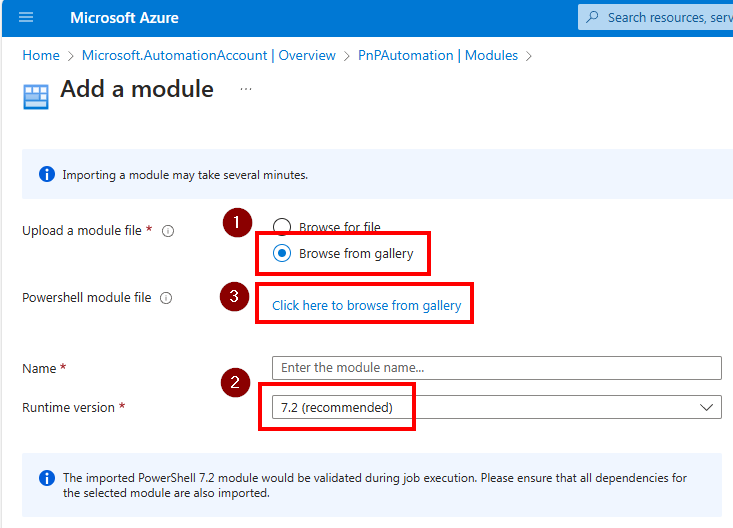
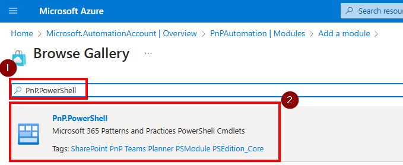
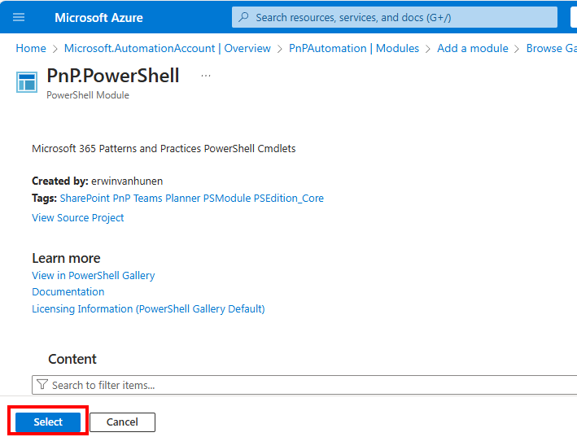
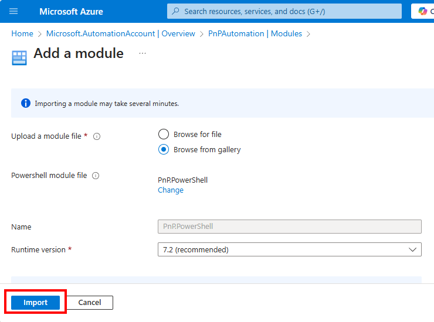
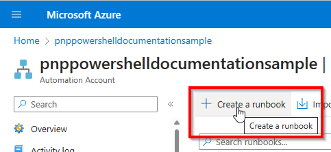

Using PnP PowerShell in Azure Automation Runbooks
In this article we will setup an Azure Automation Rubook to use PnP PowerShell.
Create the Azure Automation Runbook
As the UI in the Azure Portal changes every now and then, but the principles stay the same, follow the following steps:
Go to the Azure Portal and login with your Azure credentials
Create a new Azure Automation Account using the Create a resource button and searching for Automation or use this direct link to locate it


Fill out the details for the Azure Automation Account as desired and click Review + Create at the bottom left followed by clicking on Create on the review screen

Once the resource has been created, click on Go to resource to open the Azure Automation resource

Configure the Azure Automation Account
Now your Azure Automation Account has been created, proceed with the next paragraphs to configure it for using PnP PowerShell.
Add the PnP PowerShell module to the Azure Automation Account
To add PnP PowerShell to the Azure Automation Account, follow these steps:
Navigate to
Moduleswhich is located the left side menu of the function app under theShared Resourcesheader.
Click on Add a module at the top of the screen

Choose from the following options:
Specific stable version
Important
Currently stable PnP PowerShell version that works with Azure Automation 7.2 Runbooks is 2.1.1. If you would like to use a [latest nightly build] (#latest-prerelease-version) instead, use the below instructions
Select Browse from gallery, Runtime version 7.2 (preview) and click on the Click here to browse from gallery link

Search for PnP PowerShell and select the first result.

Click on Select to confirm.

Click on Import to start the download and importing process.

It will take up to 10 minutes for the import to complete. You can check the import status by changing the Module type filter to Custom.

Once it's done, it will show the status Available

Latest prerelease version
If you wish to use the latest prerelease/nightly build version, open up a PowerShell 7 console and execute:
Save-Module PnP.PowerShell -AllowPrerelease -Path c:\temp

Using Windows File Explorer, go to the folder where you downloaded the PnP PowerShell package. You should see a folder called PnP.PowerShell in there. Right click on it and choose the option Compress to ZIP file.

Select Browse for file, Runtime version 7.2 (preview) and click on the folder icon next to Powershell module file and select the zipped up PnP.PowerShell.zip file generated in the previous step.

Click on Import to start the download and importing process.

It will take up to 10 minutes for the import to complete. You can check the import status by changing the Module type filter to Custom.

Once it's done, it will show the status Available

Decide how you want to authenticate in your Azure Automation Runbooks
By using a Managed Identity
The recommended option is to use a managed identity in Azure to allow your Azure Automation Runbook to connect to Microsoft Graph or SharePoint Online using PnP PowerShell. Using this method, you specifically grant permissions for your Azure Runbook to access these permissions, without having any client secret or certificate pair that potentially could fall into wrong hands. This makes this option the most secure option by far. Since version 1.11.95-nightly, Managed Identities are both supported against SharePoint Online as well as Microsoft Graph cmdlets. Before this version, only Microsoft Graph was being supported.
Enabling the managed identity for an Azure Automation Runbook
In your Azure Automation account, in the left menu, go to Identity under Account Settings
Ensure you are on the System assigned tab and flip the switch for Status to On, if not already done
Click the Save button and confirm your action in the dialog box that will be shown
A new entry will now automatically be created in your Azure Active Directory for this app having the same name as your Azure Function and the Object (principal) ID shown on this page. Take notice of the Object (principal) ID. We will need it in the next section to assign permissions to.
Assigning permissions to the managed identity
Next step is to assign permissions to this managed identity so it is authorized to access the Microsoft Graph and/or SharePoint Online.
If you don't know which permissions exist yet, you can use the below sample to get a list of all available permissions:
Get-PnPAzureADServicePrincipal -BuiltInType MicrosoftGraph | Get-PnPAzureADServicePrincipalAvailableAppRole Get-PnPAzureADServicePrincipal -BuiltInType SharePointOnline | Get-PnPAzureADServicePrincipalAvailableAppRoleOnce you know which permissions you would like to assign, you can use the below samples. Note that the Principal requires the object Id (not the application/client id) or the application name.
Add-PnPAzureADServicePrincipalAppRole -Principal "62614f96-cb78-4534-bf12-1f6693e8237c" -AppRole "Group.Read.All" -BuiltInType MicrosoftGraph Add-PnPAzureADServicePrincipalAppRole -Principal "mymanagedidentity" -AppRole "Sites.FullControl.All" -BuiltInType SharePointOnline
Create a Runbook
We're now ready to create a Runbook in which your PnP PowerShell script will run.
In the Azure Portal, in the left menu, click on Runbooks under Process Automation

Click on Create a runbook at the top of the screen

Give the Runbook a name, select the Runbook type PowerShell and for the Runtime version choose 7.2 (preview) and click on Create at the bottom left.

On the Edit PowerShell Runbook page, enter your PnP PowerShell code in the large white area, i.e.:
Connect-PnPOnline -ManagedIdentity Get-PnPMicrosoft365GroupOnce done, click on Save at the top of the screen and then on Test pane to test your Runbook.

Click on Start to start testing the Runbook. It might take a few minutes for the Runbook to start. Once it's done, you will see the output of your PnP PowerShell script in the large black output section.